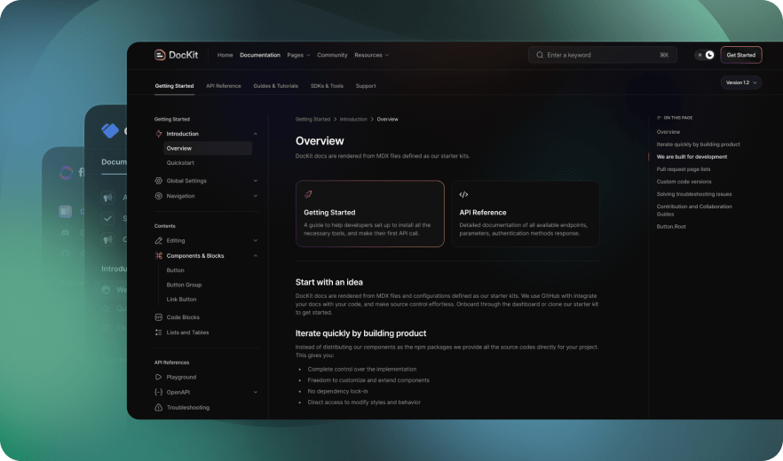

Aperçu
Une introduction à DocKit et ses principales fonctionnalités pour créer de beaux sites de documentation.
La documentation DocKit est rendue à partir de fichiers MDX définis comme nos kits de démarrage.

Bien organisé
La transparence de nos données vous aide à prendre les décisions éclairées dont vous avez besoin.
Autre fonctionnalité
La transparence de nos données vous aide à prendre les décisions éclairées dont vous avez besoin.
Commencez avec une idée
La documentation DocKit est rendue à partir de fichiers MDX et de configurations définies comme nos kits de démarrage. Nous utilisons GitHub pour intégrer vos docs à votre code et rendre le contrôle de version sans effort. Montez à bord via le tableau de bord ou clonez notre kit de démarrage pour commencer.
Itérez rapidement en construisant le produit
Au lieu de distribuer nos composants sous forme de packages npm, nous fournissons tout le code source directement pour votre projet. Cela vous donne:
- Contrôle total sur l'implémentation
- Possibilité de personnaliser les composants selon vos besoins
- Pas d'attente pour les mises à jour de packages ou les nouvelles versions
- Accès direct pour modifier les styles et le comportement
Nous sommes conçus pour le développement
La documentation DocKit est rendue à partir de fichiers MDX et de configurations définies comme nos kits de démarrage. Nous utilisons GitHub pour intégrer vos docs à votre code et rendre le contrôle de version sans effort. Montez à bord via le tableau de bord ou clonez notre kit de démarrage pour commencer.
// astro.config.mjs import { defineConfig } from 'astro/config'; import starlight from '@astrojs/starlight'; export default defineConfig({ integrations: [ starlight({ title: 'Mijn geweldige docs site', }), ], });
Pull request pagina lijsten
In plaats van onze componenten te distribueren als npm packages bieden we alle broncode direct voor je project. Dit geeft je:
-
/blog/ - Bevat de blog Markdown bestanden. Je kunt de directory verwijderen als je de blog plugin hebt uitgeschakeld, of je kunt de naam wijzigen na het instellen van de path optie. Meer details zijn te vinden in de blog gids.
-
/docs/ - Bevat de Markdown bestanden voor de docs. Pas de volgorde van de docs zijbalk aan in sidebars.js je kunt de directory verwijderen als je de docs plugin hebt uitgeschakeld, of je kunt de naam wijzigen na het instellen van path optie.
-
/src/pages - Elk JSX/TSX/MDX bestand binnen deze directory wordt omgezet in een website pagina. Meer details zijn te vinden in de pagina's gids.
-
/sidebars.js - Gebruikt door de documentatie om de volgorde van documenten in de zijbalk te specificeren.
Aangepaste code versies
DocKit docs worden gerenderd vanuit MDX bestanden en configuraties gedefinieerd als onze starter kits. We gebruiken GitHub om je docs te integreren met je code en maken source control moeiteloos. Ga aan boord via het dashboard of kloon onze starter kit om te beginnen.
npm create astro@latest -- --template starlight
pnpm create astro --template starlight
yarn create astro --template starlight